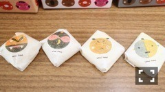
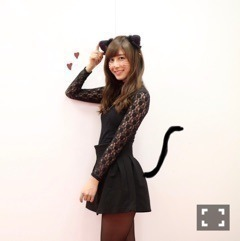

| 2016/11 12 Sat | 斎藤ちはる ももたろ。 |
ちはるーむへようこそ。
写真撮りに絢音ちゃんの側に行ったら、
急に鳥の顔してくれた！
貴重！！
可愛い！
でもちゃんと笑顔もくれた！
優しい。
仲良くなったのは少し前だけど
絢音ちゃんが沢山喋ってくれたり
凄いにこやかな笑顔で見てくれたりすると
今でもとても嬉しくなる(﹡ˆ ˆ﹡)
16thポジションも隣〜♪
サインイベント会も楽しかったです！！
リラックスしつつ
皆さんの持ってきてくださる私物に驚きつつ
沢山お話しできつつ！
来てくださる方に感謝ヽ(；；)丿
応募してくださる方にも感謝ですヽ(；；)丿
-------------------------♡
◎Chihafood◎
岡山に行った時には
必ず食べたくなる、きびだんご！
廣榮堂さんの、元祖きびだんごが
私は大好きです\( ˆ ˆ )/

サッと並べてみた。
もっと綺麗に並べれば良かったな〜
(A型なので気になる)
フワフワで、もちもちで、
ずっと食べていたくなる優しい味。
いつも5個以上食べてしまう( ¨̮ )
これを食べてキジ、犬、猿が
付いてきたというのは納得する。
だって美味しいんだもん！
もーもたろさんももたろさん
お腰につけたきびだんご
一つ私にくださいな。
もちもち。
-------------------------♡
♬ ChihaMusic
「君に届け」flumpoolさん
flumpoolさんの曲を聴くと、
初期の頃に、さゆと一緒に帰っていた時に
「アーティスト誰好き？」って聞かれて
「flumpoolさん好きだよ〜」って言ったら
「え！！私も好き！！びっくり！！」って
言われて意気投合したのを思い出す。
この曲も中二の頃の曲なんだよ〜
時の流れが早すぎる(°_°)
テンポがいいので聴きやすくて
明るい気持ちになれる曲。
昔も今も変わらず好きです。
"もしも悲しみに包まれたなら 僕は
今すぐ 君に逢いに行くよ"
このDメロの雰囲気が好き。
緊張感もあるし、思いも伝わってくる。
MVも好きだな〜

(しっぽラクガキしてみた。
ラクガキクオリティ。)
明日の個別のお洋服は何にしようかな〜
15thラストだもんね！
悩んでる途中だよ(_ _).｡o○
考えながら寝ます！
おやすみ〜
斎藤ちはる